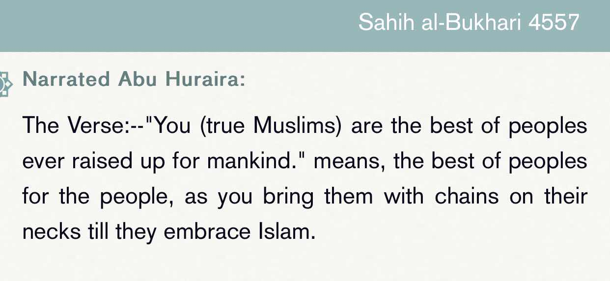
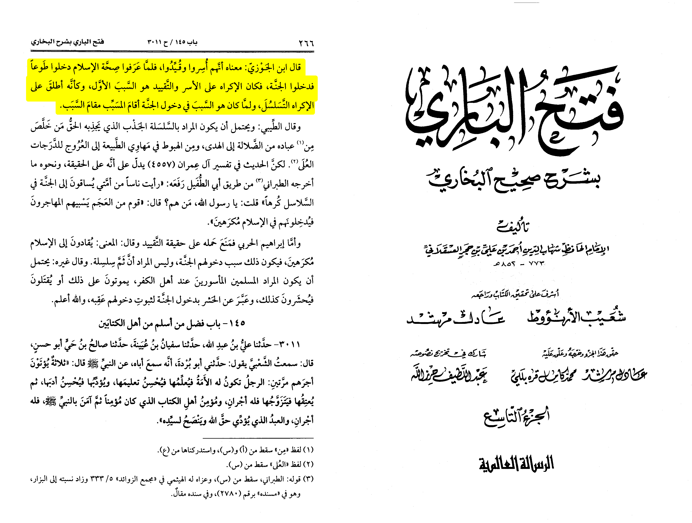

Refuting this ⬇️

1) this isn’t a hadith it is an athar from Abu Huraira that isn’t definitive proof
Imam Ibn Hajar Al-‘Asqualani ash-Shafi’ie notes:
قال بن الجوزي معناه أنهم أسروا وقيدوا فلما عرفوا صحة الإسلام دخلوا طوعا فدخلوا الجنة فكان الإكراه على الاسر والتقييد هو السبب الأول
“And ibn al-jawzy said the meaning is that those people were captured (of war) and were
imprisoned so they discovered the proof of authenticity of Islam they entered Islam by there
own will so they entered jannah so the forcing of capture and imprisoned was the first reason”
[Fathul Bari vol.9, pp.266]
